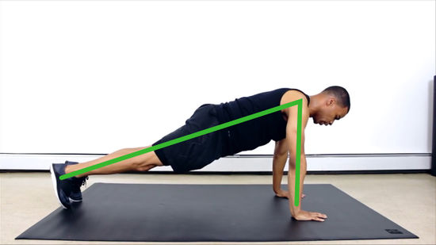
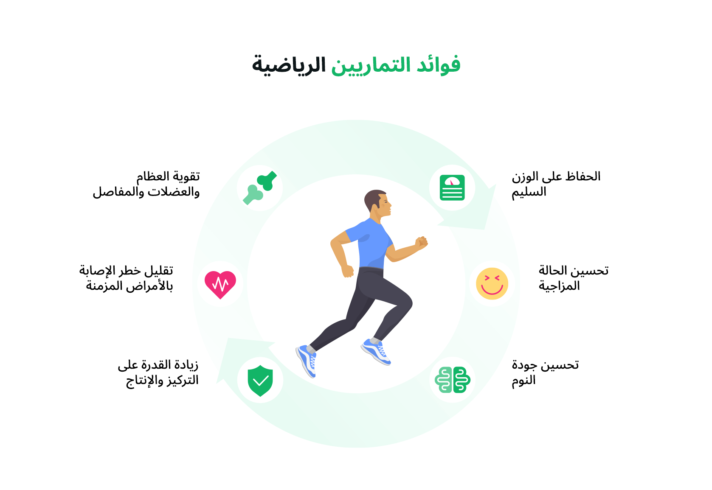

أداء التمارين يعني تنفيذ الحركات الرياضية بشكل صحيح وآمن لتحقيق أفضل نتيجة بدون إصابات. لازم يكون فيه تسخين
قبل التمرين لتحضير الجسم، واختيار تمارين مناسبة حسب الهدف (قوة، لياقة، حرق دهون...). كمان مهم التركيز على
الوضعيّة الصحيحة، التنفس المنتظم، والاستمرار في الأداء بتركيز. بعد التمرين، لازم تعمل تمارين تهدئة لإرخاء
العضلات.

عدد المرات الموصى بها
أداء التمارين لازم يكون بطريقة صحيحة وآمنة لتحقيق أفضل نتائج بدون إصابات. قبل التمرين مهم تعمل تسخين، وبعده
تهدئة للعضلات. تمارين القوة ينصح بها 2-3 مرات أسبوعياً مع راحة بين الأيام. تمارين الكارديو من 3 إلى 5 مرات
أسبوعياً لمدة 30-60 دقيقة. تمارين التمدد يفضل ممارستها يومياً أو 3 مرات بالأسبوع. والمبتدئين ممكن يبدؤوا بـ3
أيام تمرين أسبوعياً ويزيدوا بالتدريج.
الفوائد الصحية
التمارين بتقوّي القلب وبتحسن الدورة الدموية بشكل عام.بتساعد على حرق الدهون وتنظيم الوزن بطريقة طبيعية.كمان بتقوي العضلات والعظام وبتزيد من اللياقة البدنية.بتحسن المزاج وبتقلل التوتر والقلق والاكتئاب.بترفع مستوى الطاقة وبتخلي الجسم نشيط طول اليوم.وكمان بتقوي المناعة وبتقلل خطر الأمراض المزمنة زي الضغط والسكري.
